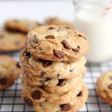

Chocolate Chip Cookies
Ingredients
- 1 cup softened butter
- 1 cup white sugar
- 2 cups all-purpose flour
Instructions
- Preheat oven to 350 degrees F (175 degrees C).
- Cream together the butter, white sugar, and brown sugar until smooth.
- Beat in the eggs one at a time, then stir in the vanilla.